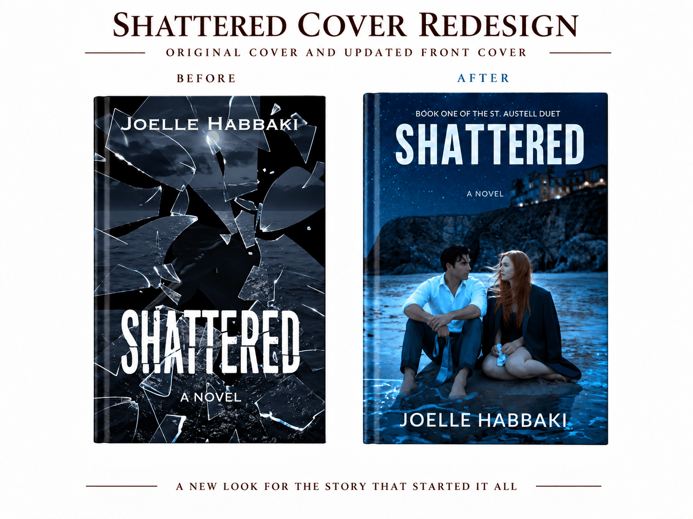
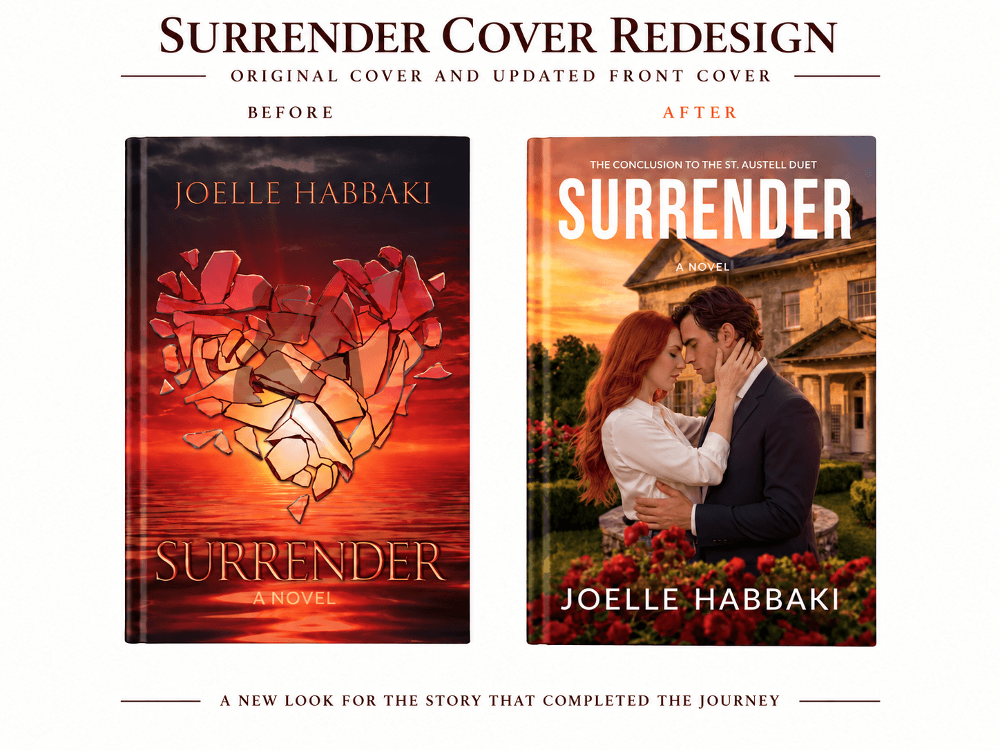
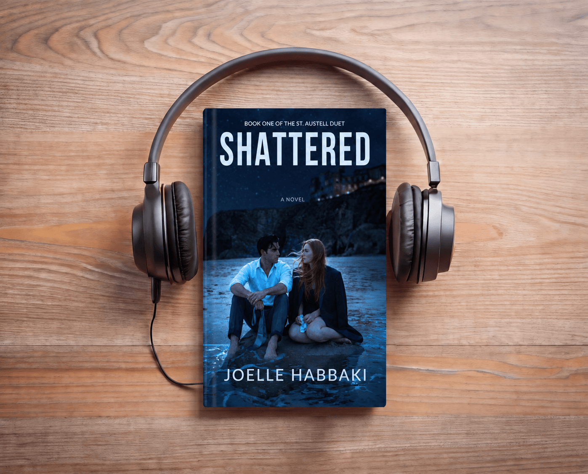

HTML Website MakerFive years after Shattered first appeared, Shattered and Surrender are returning in newly revised editions shaped by everything their author has learned since — including an original song created for Edward and Emma’s story.
When Shattered was first published, it represented a beginning. Five years later, the novel that launched Joelle Habbaki’s fiction career, together with its conclusion, Surrender, is preparing to return through Resilient Heart Press.
The St. Austell Duet is scheduled for re-release later this year with new covers, revised and expanded manuscripts, and, in the case of Shattered, something that did not exist when the story was first written: an original song created specifically for Edward and Emma’s world.
This re-release is an opportunity to return to two books that still matter deeply to their author with five additional years of storytelling, editing, publishing and design experience behind her.
Writers rarely encounter their earliest work from the same vantage point from which they created it. Years of writing other books, editing manuscripts, studying pacing, publishing, designing and listening to readers inevitably change the way a storyteller sees a scene.
That was what happened when Habbaki returned to Shattered and Surrender. The central story remained intact. So did the characters, relationships, emotional turns and ending that made the books what they were.
But the author returning to them was no longer the author who had written her first novel. There were moments she could now see more clearly: places where a conversation could carry greater weight, scenes where an additional beat could deepen an emotion already present, and opportunities to let certain moments breathe a little longer.
The aim was not to make the books into something different. It was to give the existing story everything their author now knew how to give it.
The changes extend beyond the manuscripts. Habbaki also redesigned the covers and revised the book descriptions for both titles, bringing the visual presentation of the St. Austell Duet into closer alignment with the stories readers will find inside.
For an author who has always worked across both writing and design, the process was not simply cosmetic. A cover makes a promise before the first page is opened. A blurb decides which elements of a story are placed in the foreground. Five years of distance made it possible to look at both again and ask whether they represented the books as clearly as they could.



Music has always had a place in Edward and Emma’s story. In Shattered, one particular song becomes tied to a moment between them. The kind of moment that lingers because of what the song comes to mean.
The previous song is being replaced by an original composition created for Shattered, with lyrics written by Habbaki and the track produced through Resilient Heart Records. What once existed only as a song imagined within the novel will now have a sound, a voice and an identity of its own.
The project brings another dimension to the re-release: readers will encounter Edward and Emma’s song on the page, while the music itself is being developed beyond it. It is one more way the world of the St. Austell Duet is being given room to grow with the new editions.
The original song also marks a point of intersection between two branches of Resilient Heart: a novel published by Resilient Heart Press and an original song produced by Resilient Heart Records.
For a story whose emotional life has always extended beyond dialogue and plot, music offered another way to deepen the world rather than simply describe it. Readers will still encounter the moment on the page. But now, for the first time, there will also be something they can listen to.
There is something fitting about returning to Shattered five years after its original release. It was the novel through which Habbaki first discovered what it meant to finish a book. Then came Surrender, completing the story. Other novels followed. So did Resilient Heart Press.
The new editions bring those years of experience back to the books that came first. Not to replace them or distance them from where they began, but to allow the work to evolve alongside the person who created it.
HTML Website Maker